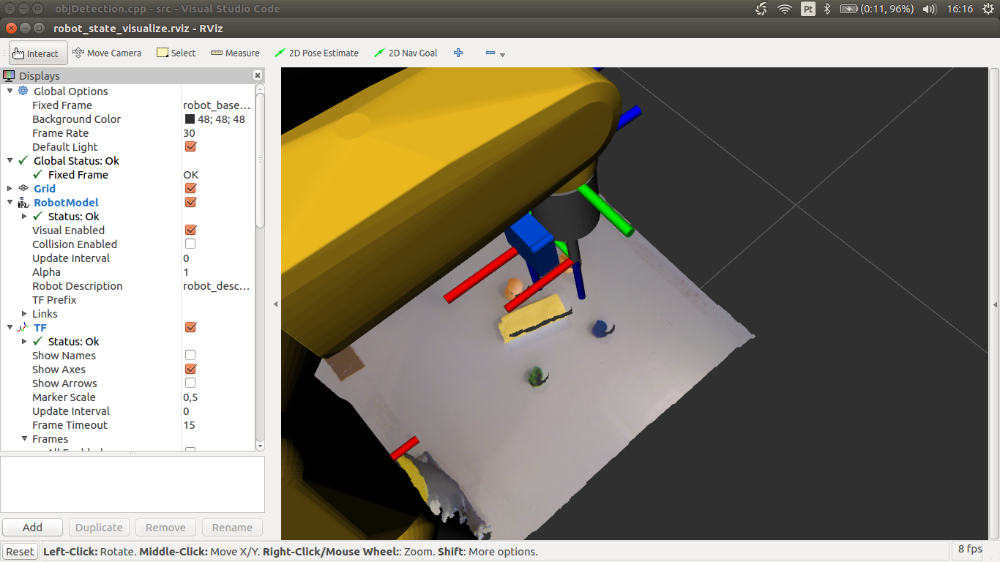

Having now the centroids of the objects in relation to the camera, some tests were performed to evaluate if the end effector of the robot moved to the centroid of the real objects, using the robCOMM language. To do so the node pointTFtransfer was created. Whereas, the node objDetection publishes the centroid of the objects and it's normal in relation to the frame of the Kinect, in the /centroid_in_robot_base and /normal_in_robot_base topics, respectively, the node pointTFtransfer subscribes to them and transforms the coordinates to be in relation to the global. This were the first tests.
Test 1 to catch the yellow piece.
The purple ball in the image indicates the centroid of the object.
It is evident that the centroid of the object, with this calibration, does not represent the centroid in real life. In order to achieve better results the extrinsic calibration of the Kinect was redone. This are the tests with the second calibration.
Test 2 to catch the yellow piece.
The purple ball in the image indicates the centroid of the object.

The results with this calibration were not satisfactory either.
